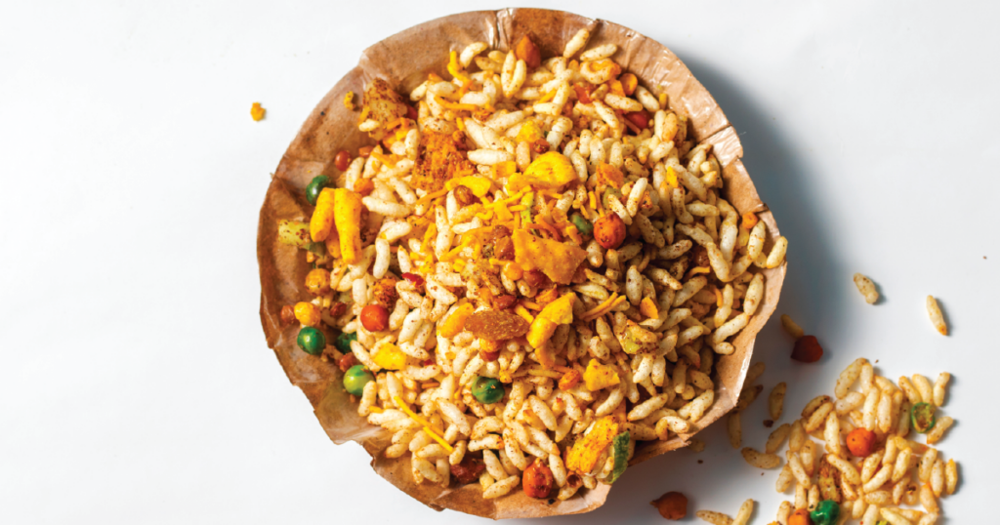

Home
Chakuli Pitha
Dahibara Aloodum
Jhal Mudhi

Description:
Jhal Mudhi is a popular street snack in the Odia cuisine of the Indian subcontinent, made of puffed rice and an assortment of Indian spices, vegetables, baramaja (also called 'mixture') and mustard oil.
Ingredients:
- Mudhi (Puffed Rice)
- Spicy Baramaja (Mixture)
- Mustard Oil
- Finely Chopped Veggies (Tomatoes, Onions, Cucumbers, Green Chillis et cetera)
- Spice Mixes (Amchur, Red Chilli Powder, Black Pepper Powder, Pink Salt, Chaat Masala et cetera)
- Available Fruits (scraped Coconuts, chopped Raw Mangoes, Lemon juice)
- Available Chutneys (Mint/Coriander/Chilli/Garlic et cetera)
Steps:
- Cut, chop, scrape, and juice the ingredients as specified
- In a large bowl, take the Mudhi, add the Baramaja Chopped Veggies, Fruits, Masalas, Mustard Oil and mix vigourously
- To this mix, add freshly squeezed Lemon juice and mix once again
- Your Jhal Mudhi is ready; serve is a paper cone and enjoy!